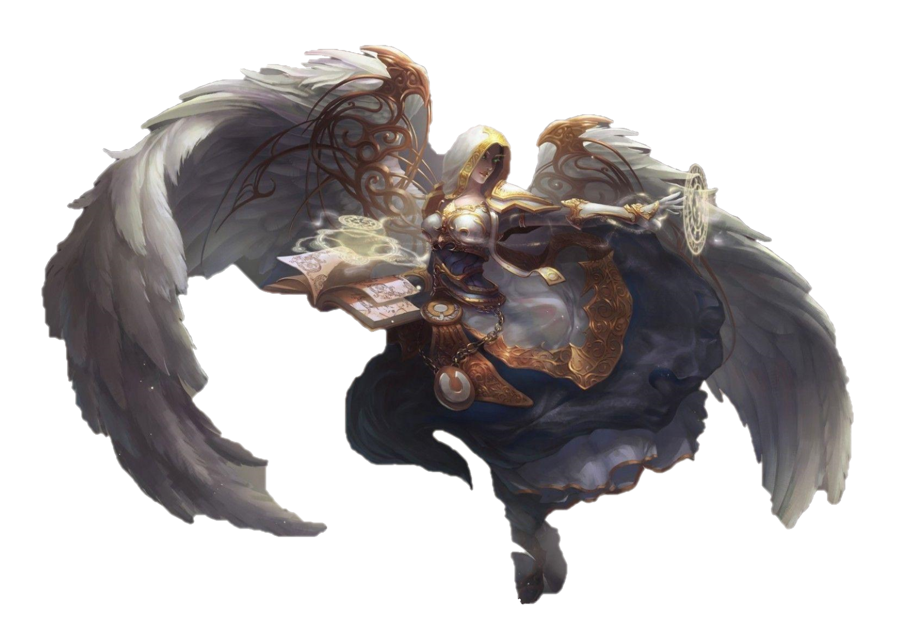

Discipline and Holy Pries Guide in Battle for Azeroth (BfA)
Discipline Priest Healing Guide
About Author
This guide is written and maintained by Mend, admin and editor at Focused Will (join them on Discord or read their Blog for healing Priests) and is reviewed by the staff at Focused Will. You can follow Mend on Twitter or Twitch.
1. Class Overview
The Discipline specialisation relies on healing players through dealing damage (thanks to
the  Atonement passive),
but also has traditional heals and absorption spells. Healing through dealing damage allows
Discipline Priests to contribute to the raid's DPS while still performing well as a healer.
Discipline Priests provide the greatest burst healing in the game, and they are also able
to contribute DPS to the raid. Balancing healing and dealing damage can be difficult to master
at first but through research and practice can be one of the more rewarding specialisations
to play in the game.
Atonement passive),
but also has traditional heals and absorption spells. Healing through dealing damage allows
Discipline Priests to contribute to the raid's DPS while still performing well as a healer.
Discipline Priests provide the greatest burst healing in the game, and they are also able
to contribute DPS to the raid. Balancing healing and dealing damage can be difficult to master
at first but through research and practice can be one of the more rewarding specialisations
to play in the game.
2. Changes for Discipline Priests
- Light's Wrath has been removed.
- Plea has been removed.
- Damage proc trinkets no longer transfer healing through Atonement and have been removed from our loot table.
 Power Word: Shield
no longer has a cooldown.
Power Word: Shield
no longer has a cooldown. Rapture has been
reworked to buff the amount of the absorb from
Power Word: Shield.
Rapture has been
reworked to buff the amount of the absorb from
Power Word: Shield. Atonement no longer
is directly affected by Mastery and has a flat 60% healing transfer rate from damage.
Atonement no longer
is directly affected by Mastery and has a flat 60% healing transfer rate from damage. Power Word: Fortitude
is a Stamina buff that has been added
Power Word: Fortitude
is a Stamina buff that has been added Holy Nova has
been added as a spammable Area of Effect spell.
Holy Nova has
been added as a spammable Area of Effect spell.
 Desperate Prayer
has been added. It was formerly a Holy-only spell.
Desperate Prayer
has been added. It was formerly a Holy-only spell.
 Power of the Dark Side
has been added as a baseline spell (formerly was a trait on our artifact weapon, Light's Wrath).
Power of the Dark Side
has been added as a baseline spell (formerly was a trait on our artifact weapon, Light's Wrath).
 Mastery: Grace
replaces Mastery: Absolution.
Mastery: Grace
replaces Mastery: Absolution. Sins of the Many
was added as a talent providing a damage / healing buff decreasing with each Atonement in your group.
Sins of the Many
was added as a talent providing a damage / healing buff decreasing with each Atonement in your group. Contrition was
added as a talent to provide Atonement healing when using Penance defensively (on an
ally).
Contrition was
added as a talent to provide Atonement healing when using Penance defensively (on an
ally).
- Lenience was
added as a talent.
 Luminous Barrier
was added as a talent that provides an absorb to all targets within 40 yards but replaces Power Word: Barrier.
Luminous Barrier
was added as a talent that provides an absorb to all targets within 40 yards but replaces Power Word: Barrier.
Holy Priest Healing Guide
About Author
This guide has been written by Niphyr, a generally knowledgeable, long-time healing Priest and theorycrafter. You can follow him on Twitter.
1. Class Overview
The Holy specialisation allows for smooth and very strong AoE/raid healing, and it performs very well in terms of single target healing as well. Holy has traditionally been a reactive healer, using a variety of spells at its disposal to quickly heal damage taken by their allies.
2. Changes for Holy Priests
 Renew now reduces
the cooldown of
Renew now reduces
the cooldown of  Holy Word: Sanctify
by 2 seconds.
Holy Word: Sanctify
by 2 seconds. Mass Dispel now
has a 45-second cooldown, up from 15 seconds.
Mass Dispel now
has a 45-second cooldown, up from 15 seconds.
 Apotheosis now
has a 20-second duration, 2-minute cooldown and generates 300% cooldown reduction on
Holy Words.
Apotheosis now
has a 20-second duration, 2-minute cooldown and generates 300% cooldown reduction on
Holy Words.- Angel's Mercy
was added. Previously this was the
Times and Measures
artifact trait which provides a chance to reduce the cooldown of Desperate Prayer
upon taking damage.
 Cosmic Ripple
was added, which was previously an artifact trait.
Cosmic Ripple
was added, which was previously an artifact trait.
 Holy Word: Salvation
was added with a 12-minute cooldown, healing all allies within 40 yards and applying both Renew and 2 stacks
of
Holy Word: Salvation
was added with a 12-minute cooldown, healing all allies within 40 yards and applying both Renew and 2 stacks
of
 Prayer of Mending.
This cooldown is reduced by 30 seconds each time you cast a Holy Word, which, with regular
use of your Holy Words, reduces the cooldown to 3-5 minutes on average.
Prayer of Mending.
This cooldown is reduced by 30 seconds each time you cast a Holy Word, which, with regular
use of your Holy Words, reduces the cooldown to 3-5 minutes on average. Guardian Spirit
now has a 3 minute cooldown with 60% increased healing.
Guardian Spirit
now has a 3 minute cooldown with 60% increased healing. Body and Mind
has been removed.
Body and Mind
has been removed. Divinity has been
removed.
Divinity has been
removed.
 Piety has been
removed.
Piety has been
removed.
 Symbol of Hope
is now channelled and a baseline ability restoring mana to nearby healers based on their missing mana.
Symbol of Hope
is now channelled and a baseline ability restoring mana to nearby healers based on their missing mana. Benediction is
now a level 90 talent.
Benediction is
now a level 90 talent. Light of the Naaru
is now a level 100 talent
Light of the Naaru
is now a level 100 talent- Power Word: Fortitude
is back as a baseline ability.
 Psychic Scream
is back as a baseline ability.
Psychic Scream
is back as a baseline ability. Holy Words is
renamed from Serendipity and is a hidden passive.
Holy Words is
renamed from Serendipity and is a hidden passive.
Restoration Druid Healing Guide in Battle for Azeroth
General Information
Welcome to our Restoration Druid healing guide for World of Warcraft Battle for Azeroth (BfA) 8.0.1. Here, you will learn everything you need to know about playing a Restoration Druid in a raid environment and in Mythic+ dungeons.
About Author
This guide has been reviewed and approved by Torty, one of the main Restoration Druid theorycrafters. He is an author of the Twig It spreadsheet and DPS action priority list. He currently raids in Pure.
1. Class Overview
Restoration Druids specialise in maintaining a steady stream of healing on a few targets in the raid and offer strong bursts of healing after using cooldowns. Restoration Druids also do well when healing a small amount of targets for a prolonged period of time(such as players with debuffs).
Restoration Druids suffer in general when they have to react to damage for which they were not prepared and
when they did not have the time to set up their HoTs ahead of time.  Tranquility
and
Tranquility
and  Flourish
offer strong burst healing when needed.
Flourish
offer strong burst healing when needed.
In order to properly play a healing role, you will need more than just class-specific information. To better understand healing in general, we recommend that you read our healing guide.
2. BFA Changes for Restoration Druids
- Healing Touch has been removed.
- Living Seed has been removed.
- Some abilities that were not on the global cooldown before are now affected by it, including
 Incarnation: Tree of Life,
Incarnation: Tree of Life,
 Dash,
Dash,
 Frenzied Regeneration,
and
Frenzied Regeneration,
and  Innervate.
Innervate.  Swiftmend cooldown
has been reduced to 25 seconds, down from 30.
Swiftmend cooldown
has been reduced to 25 seconds, down from 30.
 Regrowth base Critical
Strike chance has been removed. The healing over time effect has been slightly buffed.
Regrowth base Critical
Strike chance has been removed. The healing over time effect has been slightly buffed. Rebirth cast time
has been increased to 2 seconds from instant.
Rebirth cast time
has been increased to 2 seconds from instant.
 Bear Form Stamina
increase has been reduced to +25%, down from +55%.
Bear Form Stamina
increase has been reduced to +25%, down from +55%.
 Tranquility now
leaves a healing over time effect on all targets healed. It stacks 5 times.
Tranquility now
leaves a healing over time effect on all targets healed. It stacks 5 times. Ironbark cooldown
has been reduced to 60 seconds, down from 90 seconds.
Ironbark cooldown
has been reduced to 60 seconds, down from 90 seconds.
- Frenzied Regeneration
no longer heals based on incoming damage. Instead, it now heals for 24% of maximum Health over 3 seconds. The cooldown has
been increased to 36 seconds. Cooldown is now affected by Haste. Charges have been reduced
to 1, down from 2.
 Shred and
Shred and  Mangle are now
baseline and do not require
Mangle are now
baseline and do not require  Feral Affinity
or
Feral Affinity
or
 Guardian Affinity.
Guardian Affinity.- Dash's duration
has been reduced to 10 seconds, down from 15. Its cooldown has been reduced to 2 minutes,
down from 3.
- Innervate duration
has been increased to 12 seconds, up from 10.
 Hibernate has been
added.
Hibernate has been
added.
 Soothe has been
added.
Soothe has been
added.
3. Restoration Druid Strengths
- A lot of high-impact cooldowns
- Ability to sustain decent healing on the move
- The best tank cooldown in the game
- Very good survivability
4. Restoration Druid Weaknesses
- Below average throughput without cooldowns
- Very punishing in case of mistimed cooldowns
- Bad spot healing
5. Restoration Druid Viability
Restoration Druid's role in the raid edges slightly more towards healing big damage spikes.
We retain all the powerful options we had before to do so:
 Incarnation: Tree of Life,
Incarnation: Tree of Life,
 Flourish, and
Flourish, and
 Tranquility. Unfortunately,
this playstyle leads to a significant loss in steady healing throughout a fight. However,
being able to cover harder parts of the encounters has been historically a very strong
niche to fill, assuming your throughput is competitive with other healers in the raid.
Tranquility. Unfortunately,
this playstyle leads to a significant loss in steady healing throughout a fight. However,
being able to cover harder parts of the encounters has been historically a very strong
niche to fill, assuming your throughput is competitive with other healers in the raid.
Dungeon viability has taken big hits with the  Bear
Form
nerfs and overall reduction in burst throughput available. Restoration
Druids will still be able to comfortably clear any Mythic+ at the levels that offer maximum
rewards, but being one of the most sought-out specs is probably a thing of the past.
Bear
Form
nerfs and overall reduction in burst throughput available. Restoration
Druids will still be able to comfortably clear any Mythic+ at the levels that offer maximum
rewards, but being one of the most sought-out specs is probably a thing of the past.
Holy Paladin Healing Guide in Battle for Azeroth (BfA)
General Information
Welcome toHoly Paladin healing guide for World of Warcraft Battle for Azeroth (BfA). Here, you will learn everything you need to know about playing a Holy Paladin in a raid environment and in Mythic+ dungeons..
About Author
This guide has been written by Holy Paladin Theorycrafter Adamselene. He currently raids with War Front of Kel'Thuzad-US. You can find him on the Hammer of Wrath class Discord and the most up to date version of “The Light and How to Swing It” — the spreadsheet he maintains with Rhyno — can be found here..
1. Class Overview
Holy Paladins specialize in tank and single-target healing, with this being their primary
role. They excel at this because of  Beacon of Light and
Beacon of Light and
 Holy Shock, as well
as their efficient single-target heals. They also possess several tools that help them mitigate
or avoid damage, both on themselves and on other raid members, such as
Holy Shock, as well
as their efficient single-target heals. They also possess several tools that help them mitigate
or avoid damage, both on themselves and on other raid members, such as  Blessing of Protection
and
Blessing of Protection
and  Devotion Aura.
Devotion Aura.
2.BFA Changes for Holy Paladins
- All bonuses from Legion's artifact weapon traits will no longer work.
 Holy Shock has +30% increased
chance to critically strike instead of double your current Critical Strike chance.
Holy Shock has +30% increased
chance to critically strike instead of double your current Critical Strike chance. Infusion of Light increases
Infusion of Light increases  Flash of Light's healing by 40%
(was 50%).
Flash of Light's healing by 40%
(was 50%). Avenging Wrath now increases your
healing done and Critical Strike chance by 30% (was 35% increased healing and 20% increased Critical
Strike chance).
Avenging Wrath now increases your
healing done and Critical Strike chance by 30% (was 35% increased healing and 20% increased Critical
Strike chance).- The power of most spells has been adjusted.
- Holy Paladins are losing two talents, Fervent Martyr and Beacon of the Lightbringer.
- They are also gaining
 Awakening and
Awakening and
 Avenging Crusader as talents.
Avenging Crusader as talents. - Avenging Wrath,
 Aura Mastery, and
Aura Mastery, and
 Holy Avenger have been added
to the global cooldown.
Holy Avenger have been added
to the global cooldown.
3. Holy Paladin Strengths
- Provide excellent passive tank healing through
 Beacon of Light
Beacon of Light - Excel at single-target healing and triage because of Holy
Shock
and Infusion of Light
- Have many utility spells such as
 Blessing of Protection and
Blessing of Protection and
 Blessing of Freedom that can be
cast on themselves or others
Blessing of Freedom that can be
cast on themselves or others - Have very high survivability due to plate armor, as well as defensive spells like
 Divine Protection or
Divine Protection or  Divine Shield
Divine Shield
4. Holy Paladin Weaknesses
- Lack a raid-wide healing cooldown equivalent to Tranquility
or
 Healing Tide Totem
Healing Tide Totem - Struggle to heal multiple spread targets quickly since it relies heavily on
 Light of Dawn for Area of Effect
(AoE) healing
Light of Dawn for Area of Effect
(AoE) healing - Are generally not a very mobile healer, with only
 Divine
Steed
as a movement speed increase
Divine
Steed
as a movement speed increase
5. Holy Paladin Viability in the Current Patch
Holy Paladins have been highly sought after healers for many expansions. While they might not be as strong in 8.0.1 as they have been in the past, that will not change. Holy Paladins bring a unique set of abilities among the healers that are incredibly valuable even if their raw healing is below average.
For Mythic+ dungeons, Holy Paladins will continue to be a top tier healer. While they have lost the 15% health
buff, Righteousness, their strengths in single-target healing, survivability, and tools such as
 Beacon of Virtue remain in place.
In addition, Holy Paladins will still provide respectable damage for a healer.
Beacon of Virtue remain in place.
In addition, Holy Paladins will still provide respectable damage for a healer.